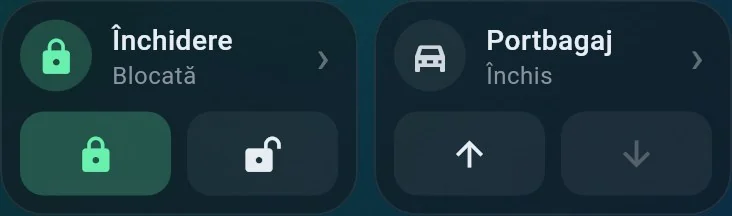
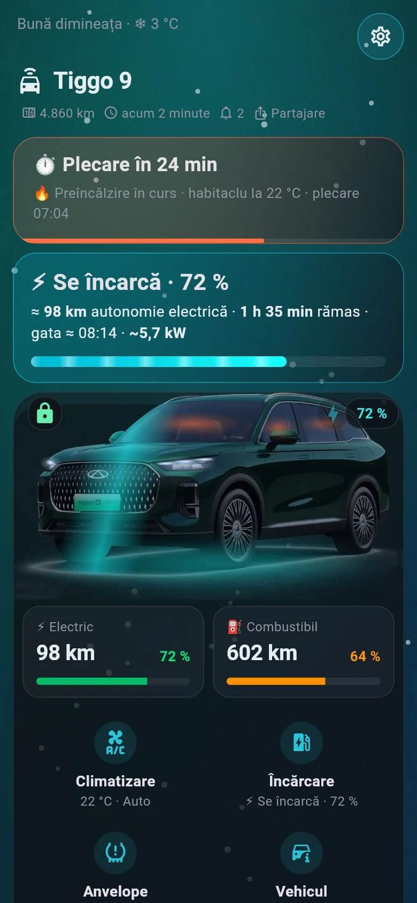
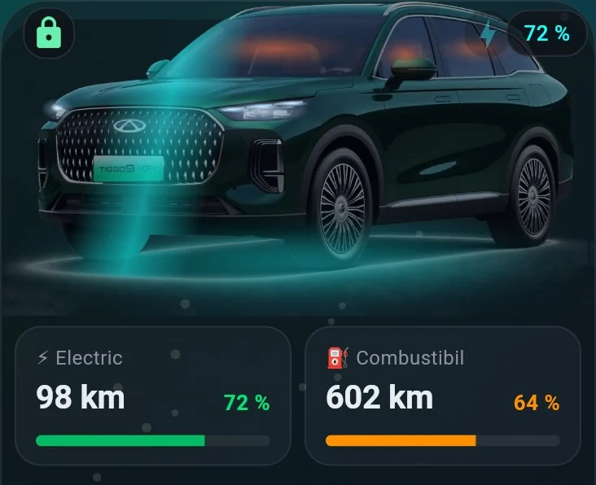
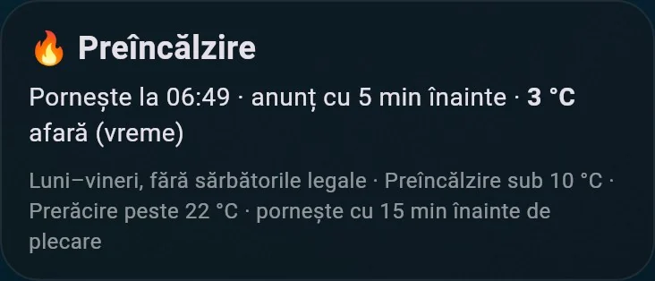
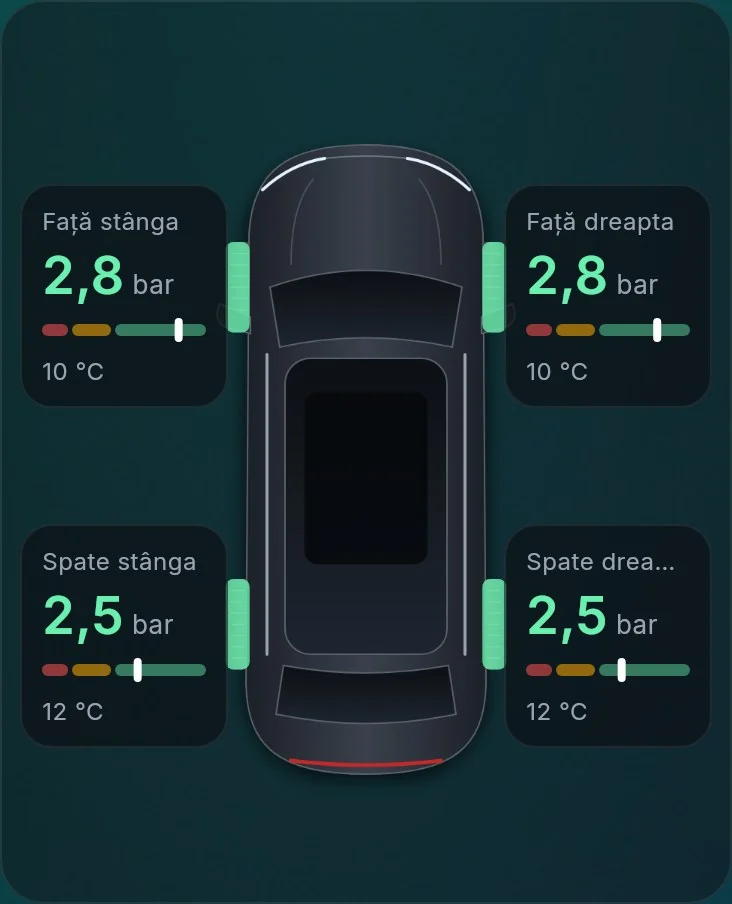
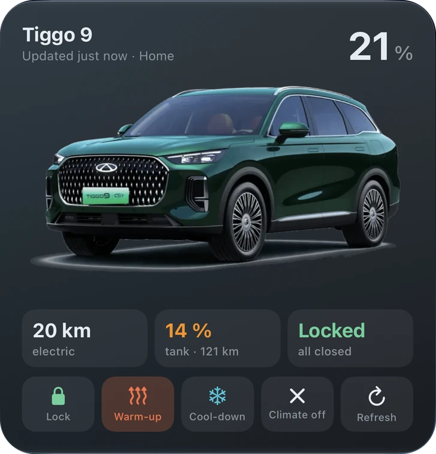
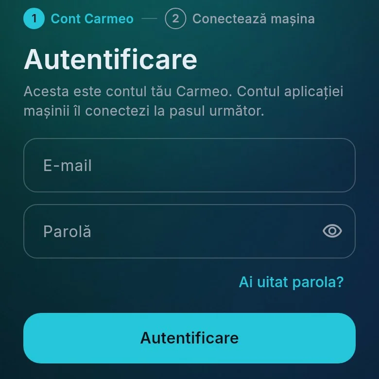
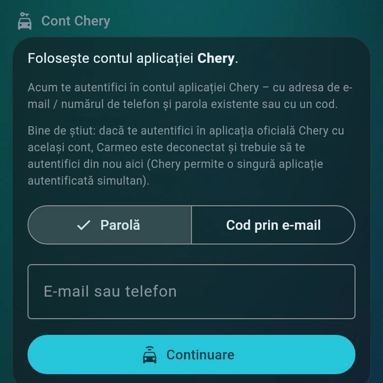
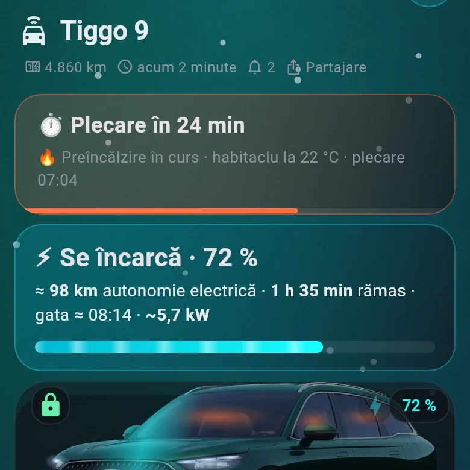

Pentru proprietarii de Chery, Omoda și Jaecoo
Mașina ta, dintr-o privire.
Baterie, autonomie, închidere și climatizare dintr-o privire. Încălzește habitaclul înainte de plecare, urmărește fiecare călătorie și încărcare și primește o notificare doar când contează.
App Store și Google Play: în curând
- Gratuit
- iPhone și Android
- Și în română
- Date stocate în UE





Funcționează cu mașinile conectate Chery, Omoda și Jaecoo – Tiggo 7, Tiggo 8, Tiggo 9 și altele.
Funcții
Tot ce arată aplicația oficială – și ce nu arată.
Totul dintr-o privire
Baterie, combustibil și autonomie, închidere, uși, geamuri, anvelope și locul unde e parcată mașina – cu propria ta mașină, în culoarea ei reală.
Află mai multe
Încărcare în detaliu
Puterea de încărcare în kW în timp real, timpul rămas, jurnalul fiecărei încărcări și energia ajunsă în baterie.
Preîncălzire inteligentă
Setezi ora plecării pentru fiecare zi a săptămânii. Carmeo verifică prognoza și încălzește sau răcește habitaclul la timp.

Control de la distanță
Blocare și deblocare, climatizare, încălzirea scaunelor și a volanului, dezaburire – cu confirmare înaintea comenzilor sensibile.
Anvelope, service, documente
Presiunea din anvelope cu avertizare, următorul service după dată sau kilometri, mementouri pentru rovinietă, ITP și asigurare.
Află mai multe
Alerte care contează
- Îngheț la noapte
- A rămas deblocată
- Încărcare terminată
- Cineva a plecat cu ea
Călătorii și trasee
Fiecare călătorie pe hartă, cu distanța, ponderea electrică și cât te-a costat.
Află mai multeCosturi și consum
Energie și combustibil pe călătorie, costul fiecărei călătorii și încărcări cu prețurile tale de acasă și din alte locuri, totaluri lunare.
Află mai multeSecuritate integrată
Autentificare în doi pași, dispozitive autentificate pe care le poți deconecta de la distanță, Face ID sau amprentă înainte de deblocare.
Află mai multeNou în 1.7.0



Dincolo de aplicație
Mașina ta pe ecranul de blocare, nu ascunsă într-o aplicație.
iPhone
- Widgeturi pe ecranul principal și pe ecranul de blocare
- Live Activities în Dynamic Island
- Butoane în Centrul de control
Android
- Widgeturi pe ecranul principal
- Plăci în Setări rapide
- Notificări live de încărcare
Încărcarea, numărătoarea inversă a preîncălzirii și starea închiderii te urmează oriunde te uiți – o atingere pentru blocare, preîncălzire sau prerăcire.
Cum funcționează
Gata în trei minute.
Instalează Carmeo
Creează un cont Carmeo gratuit cu e-mail, Apple sau Google.

Conectează mașina
Autentifică-te cu contul tău Chery sau OMODA | JAECOO. Sfat: partajează mașina cu un al doilea cont, ca să rămână autentificată și aplicația oficială.

Atât
Carmeo veghează asupra mașinii zi și noapte – la fiecare 2 minute când conduci sau încarci, la fiecare 10 minute când e parcată.

Confidențialitate și securitate
Mașina ta, datele tale.
Carmeo are nevoie de contul mașinii ca să poată comunica cu ea. Iată exact ce se întâmplă cu el – și cu tot ce mai stochează aplicația.
Politica de confidențialitate (în engleză)Parola contului mașinii nu este stocată niciodată
Este folosită o singură dată, pentru autentificarea în cloudul mașinii, apoi este ștearsă.
Cheile și PIN-ul sunt criptate
Cheile de autentificare ale mașinii și PIN-ul vehiculului sunt stocate cu criptare AES-256.
Stocate în UE
Datele tale se află pe servere din Irlanda și Germania.
Fără reclame, fără analiză de date
Fără profilare și fără vânzare de date. Datele tale servesc doar funcționării aplicației.
Istoricul locațiilor poate fi pus pe pauză
Oprești înregistrarea locației oricând vrei – călătoriile sunt atunci înregistrate fără locuri.
Export sau ștergere oricând
Descarci tot ce stochează Carmeo sau îți ștergi contul și toate jurnalele, direct din aplicație.
Cu ce mașini funcționează Carmeo?
Cu mașinile care funcționează în Europa cu aplicația oficială Chery sau cu aplicația OMODA | JAECOO. Tiggo 7, Tiggo 8 și Tiggo 9 sunt folosite zilnic de utilizatorii noștri.
De ce are nevoie Carmeo de contul mașinii mele?
Mașina ta comunică doar cu serviciul online al producătorului. Carmeo folosește același serviciu, prin propriul tău cont – altfel mașina nu poate fi accesată. Parola este folosită o singură dată, la autentificare, și nu este stocată niciodată; cheile de autentificare sunt păstrate criptat.
Aplicația oficială va funcționa în continuare?
Cloudurile producătorilor permit o singură aplicație autentificată pe cont. Partajează mașina cu un al doilea cont în aplicația oficială și conectează-l pe acela la Carmeo – așa funcționează amândouă.
Pot avea probleme cu contul mașinii?
Carmeo este o aplicație neoficială, iar condițiile producătorilor restricționează accesul din alte aplicații – așa că ei pot restricționa un cont care folosește Carmeo. De aceea recomandăm să conectezi un al doilea cont, cu care mașina este partajată, nu contul principal. Detaliile sunt în Condițiile de utilizare (în engleză).
Ce se întâmplă dacă producătorul își schimbă serviciul?
Atunci o funcție poate să nu mai meargă până când Carmeo este actualizat. Carmeo depinde de aceleași servicii online ca aplicația oficială, iar producătorii le pot schimba oricând.
Cât de proaspete sunt datele?
Se actualizează cam la 2 minute când conduci sau încarci și la 10 minute când mașina e parcată. După o comandă, imediat.
Ține Carmeo mașina trează sau consumă bateria?
Nu. Carmeo citește ce a raportat deja mașina către serviciul online al producătorului, iar interogarea nu trezește mașina. Comenzile o trezesc, la fel ca în aplicația oficială – iar Carmeo te poate anunța dacă bateria se descarcă în parcare.
Ce limbi și unități de măsură sunt disponibile?
Română, engleză, maghiară și spaniolă. Costuri în lei, euro, forinți sau lire, distanțe în kilometri sau mile și o vizualizare pentru volan pe dreapta.
O poate folosi și familia mea?
Da. Inviți până la cinci persoane, fiecare cu propriul cont Carmeo, și decizi ce poate face fiecare: doar vizualizare, vizualizare și climatizare sau totul. Locația este partajată doar dacă o activezi.
Costă ceva?
Nu. Carmeo este gratuit.
Cum îmi șterg datele?
În aplicație: Setări → Cont → Ștergere cont – tot ce ține de cont este șters imediat. Înainte îți poți exporta datele. Fără aplicație: vezi pagina Ștergerea contului (în engleză).
Cine face Carmeo?
Un dezvoltator independent din Budapesta, pentru care Carmeo este un proiect de hobby și care conduce el însuși un Tiggo 9. Carmeo nu are legătură cu producătorii auto și nu conține reclame.
Fii printre primii care încearcă noutățile.
Carmeo este în testare deschisă pe iPhone și Android. Este gratuit, iar părerea ta decide ce urmează.
iPhone – TestFlight
- Instalează din App Store aplicația gratuită TestFlight de la Apple.
- Deschide linkul de invitație pe iPhone și instalează Carmeo.
Android – Google Play
- Intră în grupul de testeri cu contul tău Google.
- Deschide pagina de test din Google Play și instalează Carmeo.